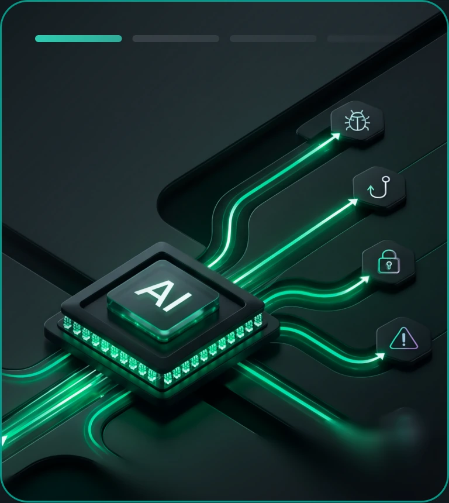
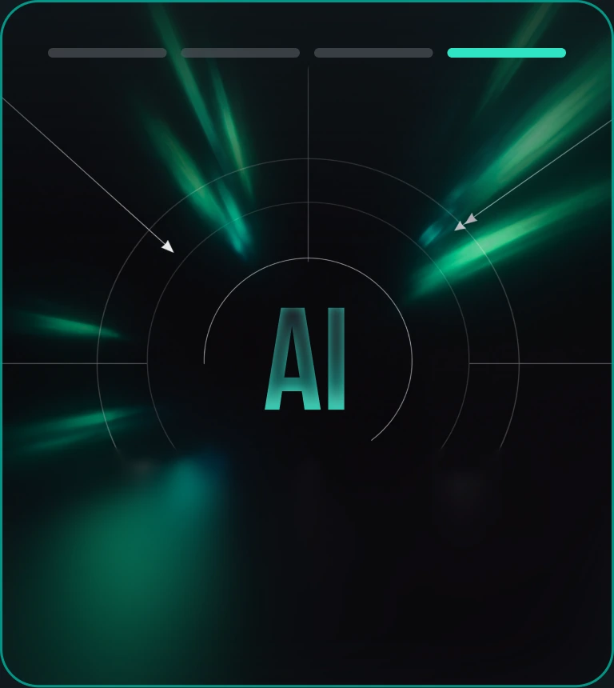
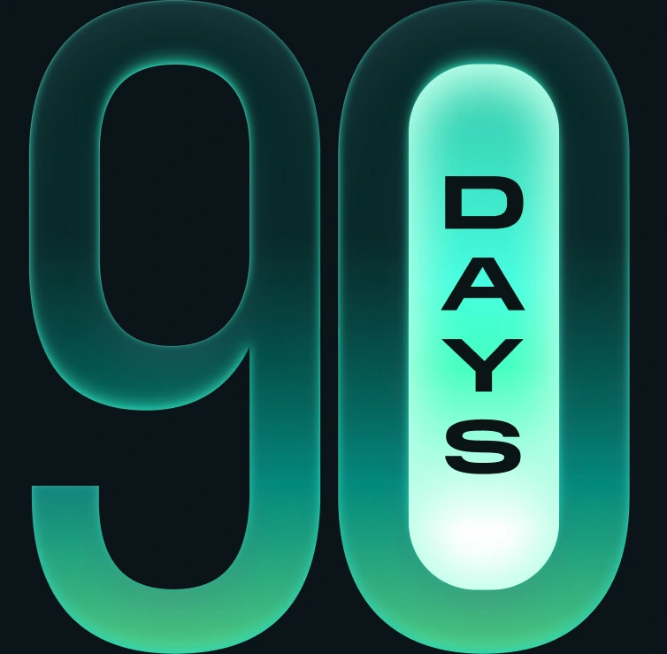

Kaspersky has identified the four cyber shifts expected to have the greatest impact on businesses worldwide through late 2026 and early 2027 — turning them into a practical 90-day action plan.
Get your priorities for the next 90 days
So instead of funding outdated strategies, you can focus your resources on the exposures likeliest to impact:
Understand the four shifts reshaping business risk
The Critical 90 guide examines four closely connected cyber shifts through a business lens. It explains where exposure may arise, what the potential consequences are and which actions your business should prioritize over the next 90 days.
What are the four cyber shifts?


The report: 90 days
From four shifts
to one business agenda:
Why the next 90 days?
Cyber risk is changing faster than many business controls, leading many cyber strategies to treat everything as “urgent”.

For each shift
The guide identifies
The potential business impact
The decisions that require executive attention
The functions
to involve
The actions to initiate within 30, 60 and 90 days
The evidence leadership requires to assess progress
Get better visibility, clearer ownership and evidence that your business can respond when its operations, finances or trust are at stake.
Critical → moderate → measured
Our three-month framework
flips this entirely.
You get a step-by-step timeline that dictates
The next 90 days